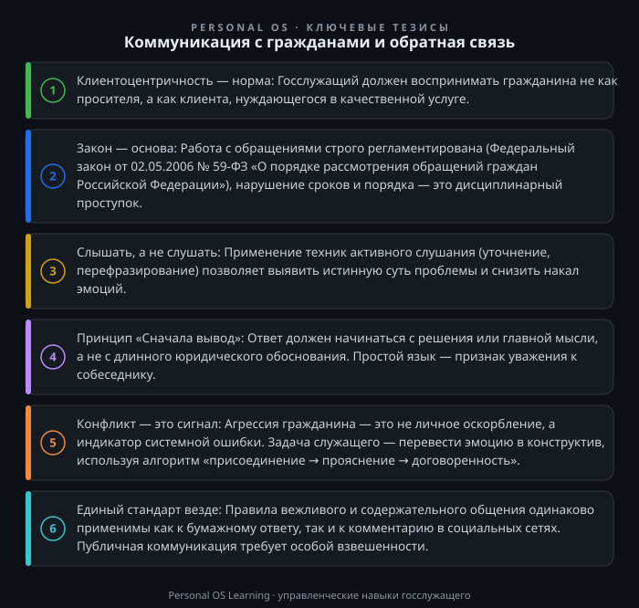

Введение
В современной России государственная гражданская служба переживает период глубокой трансформации. От чиновника больше не требуется лишь формального исполнения должностных инструкций; сегодня на первый план выходит клиентоцентричность — способность услышать гражданина, понять его проблему и предложить действенный механизм её решения. Запрос на «обратную связь» перестал быть абстрактной категорией — это конкретный измеримый показатель эффективности, который оценивается и вышестоящим руководством, и обществом.
Почему эта тема критически важна? Каждое обращение, каждый звонок в приемную и каждый комментарий в социальных сетях — это индикатор «узких мест» в системе государственного управления. Коммуникация с гражданами — это не просто обмен информацией, а инструмент диагностики и профилактики социальной напряженности. Для государственного служащего умение выстроить диалог — это не личное предпочтение, а профессиональная компетенция, напрямую влияющая на качество жизни людей. В этой статье мы разберем, как выстроить эффективную коммуникацию с гражданами, превратив формальную процедуру рассмотрения обращений в инструмент реального управления.
Прежде чем говорить о психологии общения, необходимо определить правовое поле. Работа с обращениями граждан — это строго регламентированный процесс. Основополагающим актом здесь является Федеральный закон от 02.05.2006 № 59-ФЗ «О порядке рассмотрения обращений граждан Российской Федерации». Этот закон устанавливает не только сроки (30 дней с момента регистрации, с возможностью продления еще на 30 дней), но и определяет базовые принципы: обязательность принятия обращения к рассмотрению, обеспечение объективности и всесторонности, а также право гражданина на получение письменного ответа.
Однако работа с обращениями — это лишь верхушка айсберга. Современный подход подразумевает более широкое взаимодействие. Здесь важно учитывать и стратегические документы, определяющие вектор развития госслужбы. В частности, ориентиром служит Указ Президента РФ от 07.05.2012 № 601 «Об основных направлениях совершенствования системы государственного управления», который заложил требования к уровню удовлетворенности граждан качеством предоставления государственных услуг. Понимание этих нормативных требований — не формальность, а профессиональная необходимость, позволяющая выстраивать коммуникацию в правовом поле, не допуская нарушений и злоупотреблений.
Часто госслужащий воспринимает диалог с гражданином как оборону или отражение атаки. Это деструктивная позиция. Базовый инструмент профессионала — активное слушание. Это не просто молчание в ожидании своей очереди говорить, а сложный процесс концентрации на собеседнике.
Техника «Трех шагов»:
Пример из практики: Гражданка обращается с жалобой на «ужасную работу МФЦ». Если следовать формальной логике, ответ будет о том, что МФЦ не входит в структуру вашего ведомства. Но при активном слушании выясняется, что женщина просто не знает, куда ей обратиться за исправлением ошибки в документе. Задача служащего — не отмахнуться, а помочь с перенаправлением запроса или дать точный адрес профильного специалиста. Это и есть клиентоцентричность.
Главный враг эффективной коммуникации — канцелярит. Фразы вроде «В связи с отсутствием целесообразности...» убивают доверие и запутывают гражданина. Ответ должен быть ясным, структурированным и недвусмысленным.
Принцип «Пирамида Минто» в действии:
Отвечайте на вопрос сразу, в первом абзаце. Вывод — в начало, аргументы — после.
Правила составления письменного ответа:
Идеальных ситуаций не бывает. Рано или поздно вы столкнетесь с агрессией, раздражением или слезами. В этот момент важно помнить: гражданин злится не на вас лично, а на ситуацию, в которую попал.
Алгоритм работы с «трудным» собеседником:
Запрещено вступать в перепалку, повышать голос и использовать фразы «Это не моя работа» или «Мне некогда». Если вы не можете решить вопрос, вы обязаны оказать содействие в его решении (согласно 59-ФЗ).
Сегодня значительная часть коммуникаций перешла в интернет. Госорганы активно ведут аккаунты в социальных сетях (ВКонтакте, Одноклассники, Телеграм). Работа в публичном поле требует особой аккуратности. Ответ в комментариях должен быть лаконичным и не содержать персональных данных.
Инструменты работы в соцсетях:
Для закрепления материала предлагаю выполнить три упражнения. Они займут не более 20-30 минут, но принесут практическую пользу.
Задание 1. Ревизия «сухого остатка» (письменная работа).
Возьмите последний подготовленный вами ответ на обращение гражданина (или типовой шаблон вашего ведомства). Прочитайте его глазами человека, не погруженного в специфику работы вашего отдела. Перепишите его, следуя правилам «Пирамиды Минто»:
Задание 2. Тренировка «Стоп-кран» (ролевая игра).
Попросите коллегу (или друга) сыграть роль «сложного» гражданина. Задача: гражданин обвиняет вас в том, что вы «ничего не делаете», и требует немедленно решить его проблему, которая находится в компетенции другого ведомства. Ваша задача — используя технику активного слушания и алгоритм работы с возражениями, привести его к конструктиву. Запишите себя на диктофон. После упражнения проанализируйте: на какие фразы вы отреагировали эмоционально? Где вы перебили собеседника? Удалось ли вам перевести диалог в русло конкретных договоренностей?
Задание 3. Анализ цифрового следа (аналитическая работа).
Откройте официальную страницу вашего ведомства (или регионального органа власти) в социальной сети. Найдите три поста, под которыми граждане оставляют негативные комментарии или задают вопросы.
Коммуникация с гражданами — это не просто обмен репликами, а важнейший управленческий процесс. Это барометр, показывающий, насколько эффективно работает государственный аппарат. Освоив инструменты активного слушания, структурирования информации и управления конфликтом, вы не просто решаете конкретную проблему заявителя, а повышаете уровень доверия к государству в целом. Помните: за каждым обращением стоит человек, и от того, насколько внимательно вы его выслушаете и насколько ясно ответите, зависит его итоговое впечатление о работе всей системы.

Открыть инфографику в полном размере ↗
Отправить отметку в базу Пройти тест по теме